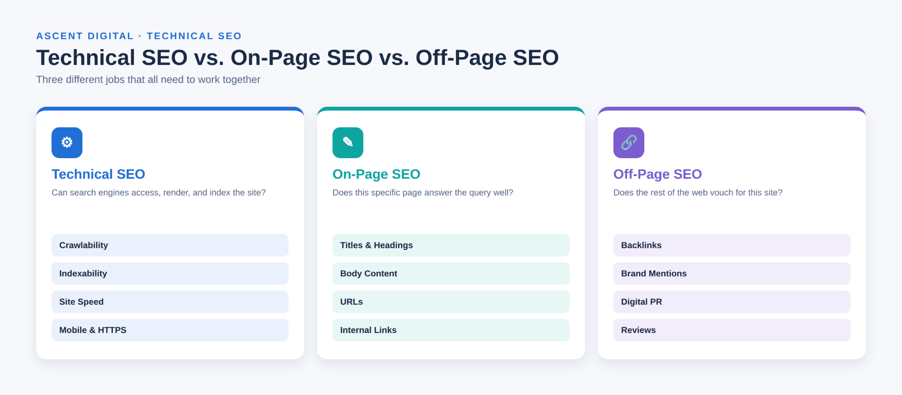
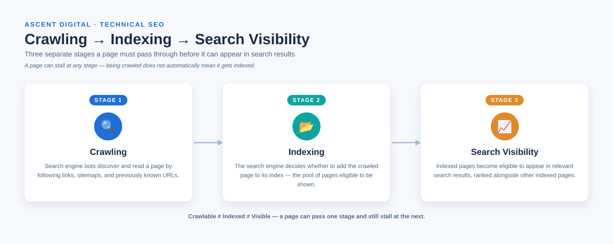
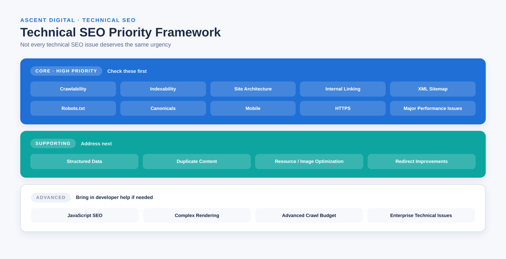

What Is Technical SEO? A Beginner's Guide
Technical SEO is the practice of making sure a website's underlying setup allows search engines to find, access, understand, and serve its pages correctly. This technical optimization supports the foundation of a website so its content can be discovered and processed properly.
It doesn't deal with what your content says -- that's the job of on-page SEO. Technical SEO focuses on whether search engines can reach that content, understand the website structure, and load each web page in a way that works well for visitors.
Think of technical SEO as the plumbing and wiring behind a website. A visitor never sees the pipes, but if they're broken, nothing upstream works properly -- pages may not load, get discovered, or get indexed, no matter how good the writing is.
At a foundational level, technical SEO covers several connected jobs: letting search engines crawl your site, allowing them to index the pages worth showing in search results, making sure those pages render and load acceptably, and removing structural problems such as broken links, duplicate URLs, and confusing site architecture. These technical SEO basics are accessible to many beginners, although some advanced areas require code or server knowledge.
Why Is Technical SEO Important?
Content and links matter, but they can't do their job if search engines can't reach or interpret your pages. This is why technical SEO is important: if a page isn't crawled and indexed, it cannot compete in search engine results, regardless of how well it is written or how many quality backlinks point to it.
Technical SEO can also affect the experience visitors have after they arrive. A web page that loads slowly, breaks on mobile devices, or sends visitors through unnecessary redirect chains creates friction that can reduce the usefulness of the page. Page experience is one factor among many that can affect how a page performs in search, but no single technical improvement guarantees a higher search engine ranking.
Technical SEO also protects the investment you've already made in content and off-page SEO. An accidental "noindex" tag or a blocked section in robots.txt can prevent important pages from appearing in search results even when the content and backlink strategy are strong.
Technical SEO vs. On-Page SEO vs. Off-Page SEO
These three areas of SEO are connected, but each has a different purpose.
Technical SEO focuses on the website's technical foundation and whether search engines can crawl, render, and index its pages.
On-page SEO focuses on the content and structure of individual pages, including titles, headings, keywords, and the information provided to users.
Off-page SEO focuses on signals and activities that happen outside the website, such as backlinks, brand mentions, digital PR, and outreach.
The simplest way to remember the difference is:
- Technical SEO: Can search engines access and process the website?
- On-page SEO: Does the page provide useful and relevant information?
- Off-page SEO: What signals from outside the website support its credibility?

All three areas work together. A technically strong website can still have weak content, while an excellent article can struggle if technical problems prevent search engines from accessing or indexing it.
What Is Included in Technical SEO?
A complete technical SEO guide can cover many areas, but they are not all equally urgent. The most useful approach is to understand the main technical SEO elements and prioritize the issues that can prevent important pages from being crawled or indexed.

Crawlability
Crawlability refers to whether search engine crawlers can reach and read the pages on your website. Search engines discover pages by following links, reading XML sitemaps, and revisiting URLs they already know about.
If an important page is blocked, orphaned, or buried too deeply within the website structure, a crawler may have difficulty discovering it.
This is the first technical SEO check because a page generally needs to be accessible to search engines before it can be evaluated for indexing.
Beginners should check that important pages:
- Can be reached through internal links
- Are not accidentally blocked in robots.txt
- Are not isolated from the rest of the website
- Can be reached within a reasonable number of clicks from the homepage
Indexability
Indexability is different from crawlability. A page can be successfully crawled but still not be included in a search engine's index.
Indexability refers to whether a search engine can add a page to its index and consider it eligible to appear in search results.
Common indexability problems include:
- An accidental "noindex" directive
- A canonical tag pointing to another URL
- Duplicate or near-duplicate pages
- Technical settings that prevent important pages from being indexed
One of the most useful technical SEO basics is checking important pages in Google Search Console after a site migration, redesign, or major structural change.
Site Architecture and Internal Linking
Site architecture describes how the pages of a website are organized and connected. Internal linking creates paths between related pages and helps both visitors and search engines understand the relationship between different sections.
A logical site structure makes important pages easier to discover and can help search engines understand which content is important.
Beginners should aim to keep important pages within a reasonable number of clicks from the homepage and use descriptive internal links between genuinely related pages.
XML Sitemaps
An XML sitemap is a file that lists URLs you want search engines to discover. It can help search engines find content more efficiently, especially on larger websites or sites where some pages are not strongly connected through internal links.
An XML sitemap does not guarantee that a page will be indexed. It simply provides another way to communicate which URLs exist.
As part of a technical SEO audit, check that:
- An XML sitemap exists
- It is submitted in Google Search Console
- Important URLs are included
- Redirected or unwanted URLs are not unnecessarily included
Robots.txt
Robots.txt is a text file at the root of a website that provides instructions to search engine crawlers about which areas they should or should not access.
It can be useful for controlling crawler access to areas such as internal search results or certain parameter-based URLs, but it can also cause serious problems when configured incorrectly.
One common mistake is accidentally blocking an entire website or an important section of it. Beginners should review robots.txt after a website launch, migration, redesign, or major technical change.
Canonical URLs and Duplicate Content
A canonical tag helps indicate which version of a page should be treated as the preferred version when multiple URLs contain the same or very similar content.
Duplicate content occurs when substantially similar content is available through more than one URL. This can happen through product filters, tracking parameters, different URL variations, or other site configurations.
A proper canonical setup can help search engines understand which URL should be treated as the main version. However, canonicalization should not be used as a shortcut for combining pages that are genuinely different.
Page Speed and Core Web Vitals
Page speed refers to how quickly a page loads and becomes usable. Core Web Vitals are a set of Google metrics that measure important aspects of page experience.
The current Core Web Vitals include:
- Largest Contentful Paint (LCP), which measures loading performance
- Interaction to Next Paint (INP), which measures responsiveness
- Cumulative Layout Shift (CLS), which measures visual stability
A slow or unstable web page can create a poor user experience. Page experience can be one factor in search performance, but improving a speed metric does not guarantee a specific ranking result.
For basic technical optimization, beginners can test important pages using tools such as Google's PageSpeed Insights. Focus first on significant issues, such as oversized images, excessive scripts, or other resources that slow down the page.
Mobile SEO and HTTPS
Mobile SEO ensures that a website displays and functions properly on phones and tablets. Google primarily uses the mobile version of a site's content for indexing and ranking, so important content and functionality should work correctly on mobile devices.
HTTPS provides an encrypted connection between a visitor's browser and the website. It is now a standard expectation for modern websites.
Beginners should:
- Test important pages on an actual mobile device
- Check that text and buttons are usable
- Make sure content is not cut off or overlapping
- Confirm that pages load securely over HTTPS
- Check for mixed-content warnings
Redirects and 404 Errors
A redirect sends visitors and search engines from one URL to another. A 301 redirect is commonly used when a page has permanently moved.
A 404 error means that the requested page cannot be found. A small number of 404 responses can be normal, but problems arise when important pages return 404 errors or internal links repeatedly point to URLs that no longer exist.
Redirect chains can also create unnecessary complexity. A redirect chain occurs when one URL redirects to another URL that then redirects again.
As part of technical SEO best practices, regularly check for broken internal links, unnecessary redirect chains, and outdated URLs. When a page has genuinely moved, redirect it to the most relevant replacement rather than sending users to an unrelated page.
Structured Data
Structured data is standardized code that helps search engines understand specific information on a web page. Schema.org is commonly used to provide this information in a structured format.
For example, structured data can describe information such as:
- Article authors
- Product prices
- Recipe information
- Review details
- Event information
Structured data does not automatically improve rankings. When it accurately describes the content on a page, it can help search engines understand that content and may make the page eligible for certain enhanced search features.
Only use structured data that accurately represents the visible and relevant information on the page.
JavaScript SEO
JavaScript SEO deals with technical issues that can occur when a website relies heavily on JavaScript to load or display content.
Search engines may need to render JavaScript before they can fully process certain content or links. If important content only appears after JavaScript executes, rendering problems can affect how efficiently that content is discovered or indexed.
JavaScript SEO is an advanced technical SEO element. Most beginners using a standard content management system such as WordPress do not need to start here.
If a website has significant JavaScript dependencies and unexplained indexing problems remain after basic crawlability and indexability checks, developer assistance may be appropriate.
How to Do Technical SEO: A Basic Audit
A full technical SEO audit can become complex, but beginners can start with a simple process using tools such as Google Search Console and a basic site crawler.
1. Check indexing status.
Use Google Search Console to confirm that important pages are indexed. Look for pages excluded because of noindex directives, canonical issues, or other indexing problems.
2. Check crawlability.
Review robots.txt and make sure important sections of the website are not accidentally blocked. Confirm that important pages can also be reached through internal links.
3. Review the XML sitemap.
Make sure the sitemap exists, is submitted in Search Console, and contains URLs that you actually want search engines to discover and index.
4. Check page speed and Core Web Vitals.
Test several important pages using PageSpeed Insights. Focus on significant performance problems instead of trying to achieve a perfect score on every metric.
5. Test mobile usability.
Open important pages on an actual phone and check for layout problems, difficult-to-use buttons, small text, or overlapping elements.
6. Check broken links and redirects.
Use a site crawler to identify internal 404 errors, unnecessary redirect chains, and other URL problems.
7. Check canonical and duplicate-content issues.
Look for multiple URLs containing the same or very similar content and confirm that canonical signals are appropriate.
8. Confirm HTTPS.
Make sure the entire website loads securely and does not produce mixed-content warnings.
This basic process provides a practical starting point for beginners who want to understand how to do technical SEO without immediately dealing with advanced server or development issues.
Technical SEO Checklist for Beginners
Use this checklist as a working reference, organized by priority rather than as a flat list.
Core -- check these first
- Important pages are crawlable and not accidentally blocked in robots.txt
- Important pages are indexed and do not have accidental "noindex" tags
- Site architecture keeps key pages within a reasonable number of clicks from the homepage
- Internal links connect related pages with descriptive anchor text
- An XML sitemap exists, is accurate, and is submitted in Search Console
- Canonical tags are configured correctly where duplicate or near-duplicate URLs exist
- The website works properly on mobile devices
- The website loads securely over HTTPS
- Important pages do not have major Core Web Vitals problems
- Important pages do not contain broken internal links or redirect loops
Supporting -- address next
- Structured data accurately describes the content where it is genuinely applicable
- Duplicate content is consolidated or canonicalized appropriately
- Images and other resources are reasonably optimized
- Redirect chains are reduced where possible
Advanced -- bring in developer help when needed
- JavaScript rendering and indexing problems
- Complex crawl-budget issues on very large websites
- Advanced server configuration
- Enterprise-level technical infrastructure

These priorities make technical SEO basics easier to manage because they help you focus on problems that can directly interfere with crawling, indexing, usability, or access before moving into advanced technical optimization.
Common Technical SEO Mistakes to Avoid
Blocking important pages by accident.
A robots.txt rule or "noindex" tag left over from a staging website can prevent important pages from appearing in search results.
Ignoring mobile rendering.
Testing only on a desktop browser can hide problems that visitors experience on actual mobile devices.
Treating page speed as a one-time fix.
Websites accumulate new images, scripts, plugins, and other resources over time. Performance should therefore be reviewed periodically.
Adding inaccurate structured data.
Structured data should accurately represent the content on the page. It should not be added simply because you expect it to improve search engine ranking.
Leaving broken links and redirect chains unresolved.
Broken links and unnecessary redirect chains can create a poor user experience and make site maintenance more difficult.
Assuming every technical change is a ranking factor.
Technical SEO can remove obstacles and improve how a website is accessed and experienced, but no individual technical change guarantees a specific search engine ranking.
Starting with advanced problems before checking the basics.
Crawlability, indexability, robots.txt, and major site structure problems should normally be reviewed before spending time on complex JavaScript SEO or enterprise infrastructure.
A Simple Technical SEO Strategy for Beginners
A practical technical SEO strategy should focus on priority rather than trying to fix every possible issue at once.
1. Start with crawlability and indexability.
Confirm that search engines can access and index your important pages.
2. Fix major structural problems.
Address broken links, redirect chains, confusing site architecture, and other issues that interfere with access or navigation.
3. Verify mobile usability and HTTPS.
Make sure important pages work correctly on mobile devices and load securely.
4. Address significant performance problems.
Use real page data to identify major speed and Core Web Vitals issues instead of chasing a perfect score.
5. Review duplicate content and canonical URLs.
Make sure search engines can identify the preferred version of pages when multiple similar URLs exist.
6. Apply technical SEO best practices.
Use accurate XML sitemaps, sensible robots.txt rules, descriptive internal links, appropriate redirects, and correct canonical signals.
7. Add structured data when it genuinely fits.
Only use markup that accurately describes the page and its content.
8. Revisit advanced technical issues when necessary.
JavaScript SEO, complex rendering, and advanced crawl-budget management can be addressed when the website actually has a problem that requires them.
A simple technical SEO strategy should be maintained over time because redesigns, migrations, new content, plugins, and structural changes can introduce new technical problems.
Conclusion
Technical SEO provides the foundation that allows search engines to find, access, understand, and process a website's pages. It includes core areas such as crawlability, indexability, site architecture, XML sitemaps, robots.txt, canonical URLs, performance, mobile usability, HTTPS, redirects, structured data, and JavaScript SEO.
For beginners, the best approach is not to fix everything at once. Start with the technical SEO basics that can prevent important pages from being crawled or indexed, then address structural, mobile, security, and performance issues. After those areas are stable, move toward supporting and advanced improvements.
Technical SEO does not guarantee a particular search engine ranking, but a strong technical foundation helps ensure that your content can be discovered and processed properly. Use the audit steps and priority checklist above as a practical starting point for ongoing technical optimization.
Frequently Asked Questions
What is technical SEO in simple terms?
Technical SEO is the work involved in making sure search engines can find, access, understand, and process a website correctly. It covers areas such as crawlability, indexability, site structure, page speed, mobile usability, and technical accessibility.
Why is technical SEO important?
Technical SEO is important because search engines need to access and process a page before it can be considered for search results. Technical issues such as blocked crawling, accidental noindex tags, or serious indexing problems can prevent important pages from appearing in search.
Is technical SEO difficult?
Some areas, such as JavaScript rendering and server configuration, can require developer knowledge. Many technical SEO basics are manageable for beginners using tools such as Google Search Console, PageSpeed Insights, and basic site crawlers.
What are the main technical SEO elements?
The main technical SEO elements include crawlability, indexability, site architecture, internal linking, XML sitemaps, robots.txt, canonical URLs, duplicate-content management, page speed, Core Web Vitals, mobile usability, HTTPS, redirects, structured data, and JavaScript SEO.
What is the difference between technical SEO and on-page SEO?
Technical SEO focuses on whether search engines can access, process, and index a website. On-page SEO focuses on the content and structure of individual pages, including titles, headings, topics, and useful information. Both areas contribute to a complete SEO strategy.
Can I do technical SEO myself?
Yes. Many technical SEO basics can be checked without coding experience. Beginners can review indexing in Google Search Console, inspect robots.txt, check XML sitemaps, test mobile pages, review page speed, and identify basic URL problems. More advanced technical issues may require developer support.
How often should a technical SEO audit be performed?
There is no single schedule that works for every website. A technical SEO audit is especially useful after major site changes, redesigns, migrations, or significant structural updates. Active websites can also benefit from periodic checks to identify newly introduced technical issues.